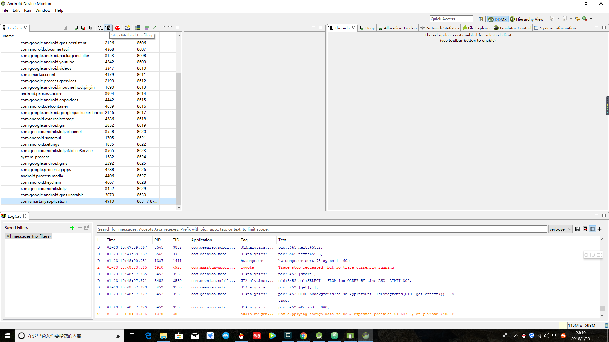
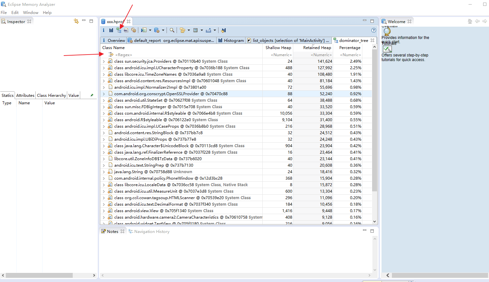

布局优化
Android UI渲染机制
人眼感觉流畅的画面大概是40帧每秒到60帧每秒，而且 他是16ms会绘制一次，如果一次绘制在20ms，就会在16ms的时候发出VSYNC信号，就无法绘制，该帧就会被丢弃，导致丢帧
在开发者选项中，可以 选择 PROFILE GPU Rendering(GPU 呈现模式分析) 并选中 OnScreen as bars 就会在屏幕上出现一些条线图，尽量让所有的条形图都在这个绿线一下
避免 OverDraw
在开发者选项中，选择 Enable GPU Overdraw(调试 GPU 过度绘制) 可以查看绘制的次数，蓝色区域是绘制比较少的，红色是绘制多的，尽量减少红色区域
优化布局层级
- Google建议嵌套的布局层数不要超过10层，如果超过10层就会出现绘制性能下降明显的情况，Android是通过对树的遍历遍历整个xml的，所以布局最好控制在5层以内
- 避免嵌套过多无用布局
- 使用
复用Layout，如果这个布局已经创建过了，在第二次创建的时候速度会快很多的，但是要适度，产品更改的比较频繁就尽量少用，不然会导致这个布局过于复杂 - 使用ViewStub延时加载，就是第一次加载的时候不出现，在调用setVisibility（View.VISIBLE）的时候放到布局树上面，如果使用setVisibility（View.GONE） 只是不显示，但是还是会放在布局树上面
Hierarchy Viewer 这个应该在优化布局里面的，但是比较复杂和重要就拿出来了
建议使用模拟器，不然可能会失败的，使用Android Studio 步骤：
Tool –> Android –> Android Device Monitor –>
这样就可以很方便的找到冗余的布局了
内存优化
什么是内存
- 寄存器 ：这个无法控制
- 栈(Stack):存放基本数据类型和对象的引用，但是对象本身不在栈中，而是放在堆中
- 堆(Heap) ： 存放new出来的对象和数组，有GC来管理
- 静态存储区域(Static Field): 程序运行的过程中一直存在的数据，比如static修饰的变量
- 常量池(Constant Pool) 存放常量
在进行分配的时候 new 一个对象 这个对象在栈中有一个引用，在堆中存储，当该变量的作用域结束后，栈中的内存会回收，但是堆中的内存不会立即回收，等待GC来回收
获取Android 系统内存信息
process Stats
1 | adb shell dumpsys procstats |
Meminfo
使用系统上的内存监视器，在设置-APP-Running里面打开，或者 adb shell dumpsys meminfo
内存回收
bitmap优化
开发过Android都知道Bitmap是引起OOM最主要的原因之一
如何优化
- 使用合适分辨率和大小的图片
- 及时回收内存，使用bitmap。recycle()方法释放资源，在Android3.0以后，bitmap放到了堆中，由GC管理，就不用手动释放了
代码优化
- 减少枚举和迭代器的使用
- 避免使用IOC框架，反射会降低效率
- Cursor，Sensor，File，Receiver等及时释放和回收
- 使用SurfaceView替代View进行大量绘图操作
- 使用OpenGl和RenderScript进行绘图操作
- 尽量缓存视图，而不是每次都执行infalte()
Lint工具
这个先不讲
使用Android Studio的Memory Monitor 工具
使用TraceView工具优化App性能
生成TraceView日志的两种方法
使用Debug类辅助：Debug.startMethodTracing() 方法
在OnCreate中使用Debug.startMethodTracing() 在OnDestory中使用Debug.stopMethodTracing()，可以精确监听，然后在/sdcard/dmtrace.trace 保存文件，需要读写sd卡权限，当然可以自定义输出路径adb pull /sdcard/trace_log.trace /local/LOG/使用Android Device Monitor工具

分析Trace View日志
主要显示信息
| 英文 | 中文和含义 |
|---|---|
| Incl CPU Time | 某个方法占用CPU的时间 |
| Excl CPU Time | 某个方法本身（不包括字方法）占用CPU的时间 |
| Incl Time | 某个方法真正执行的时间 |
| Excl Real Time | 某个方法本身（不包括字方法）真正执行的时间 |
| Calls +resurCalls | 调用次数+递归回调的次数 |
每个时间都包含两列。一个是实际时间，一个是百分比，分析的时候通常从Incl CPU Time 和Calls +resurCalls开始分析，对占用时间长的进行重点分析，如果占用时间长并且Calls +resurCalls少，就可以列为重点怀疑对象了
使用Mat工具进行分析
打开 Android Device Monitor工具 如图
这里有一个小技巧，就是不停的点击Cause Gc按钮 如果data Object一栏中的Total Size 有明显变化，就代表有可能存在内存泄漏
在这里到处一个.hprof文件。这个就是我们要分析的文件，不过这个不能直接使用mat打开，要使用命令行转换
1 |
|
将转换后的文件使用mat打开。打开mat工具，选择open a heap dump 选项
- Histogram 直方图 用于显示内存中每一个对象的数量，大小和名称。可以在最上面一样过滤关键字，在选择的对象上右击，选择List objects-with incoming references可以查看具体的对象
- Dominator Tree 会对内存中的对象按照大小进行排序，并显示对象之间的引用结构，通过分析大对象找到内存消耗的原因

Dumpsys 命令分析系统状态
在使用Dumpsys时，可以通过输入adb shell dumpsys 获取提示
| 参数 | 中文和含义 |
|---|---|
| activity | 显示所有activity栈的信息 |
| meminfo | 内存信息 |
| battery | 电池信息 |
| package | 包信息 |
| wifi | 显示WIFI信息 |
| alarm | 显示alarm信息 |
| procstats | 显示内存状态 |
性能优化这个是一个具有挑战的工作，这些只是入门的方式